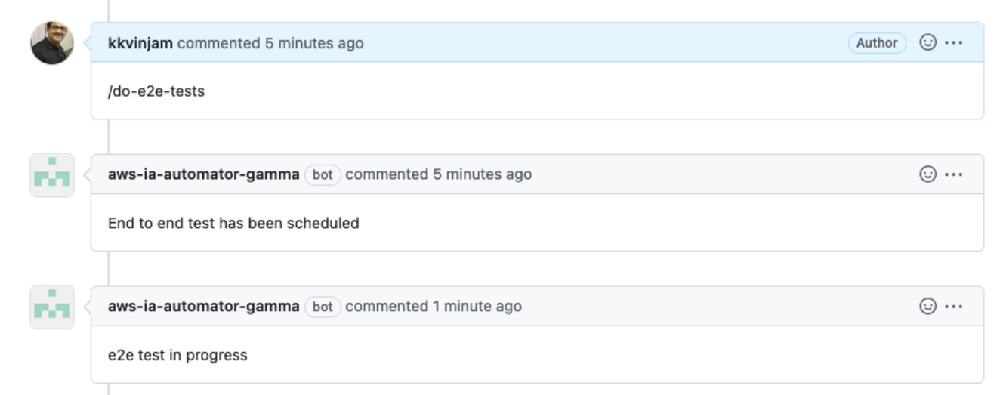

How to build an ABI project
-
Once you have access to the reposity, fork the repository. Additional information available in Fork a repo article.
Refer to below examples to create a fork from CLI.
gh auth login gh repo fork https://github.com/aws-ia/cfn-abi-aws-reference-guide.git -
Add the required ABI Modules as submodules to your repository (example below to add securityhub repo).
mkdir submodules cd submodules git submodule add https://github.com/aws-ia/cfn-abi-aws-securityhub.gitList of all available ABI Modules are Available here.
-
Build and update the code as per your project needs. Following directort hierarchy as shown below:
. ├── docs # Directory to include additional documentation ├── images # Directory to include images used in the documentation ├── lambda_functions # Directory for storing lambda code │ └── source ├── scripts ├── submodules # Directory for ABI modules │ └── cfn-abi-aws-securityhub │ ├── images │ ├── lambda_functions │ │ └── source │ ├── scripts │ └── templates │ ├── functions │ ├── scripts │ ├── sra-securityhub-org │ └── sra-sh-prerequisites └── templates # Directory for storing IaC templates └── scriptsNote: There is no need to package your lambda source. Taskcat will take care of it and upload it in the path of lambda_functions/packages/<directory-name/lambda.zip>. Please make references to your code as needed. -
Run static tests locally.
Execute following tests locally in your environment, the same set of tests are executed as part of the pipeline validations done with these tests:
-
cfn-lint tests:
pip3 install cfn-lint -
taskcat lint:
pip3 install taskcat -
cfn-nag tests and add exceptions if needed
-
-
Run functional tests locally
-
automated-security-helper (ASH) tests (this performs
cfn_nagas well)## Executing ash tool $ git clone https://github.com/aws-samples/automated-security-helper.git /tmp/ash # Set the repo path in your shell for easier access $ export PATH=$PATH:/tmp/ash $ ash --source-dir . $ cat aggregated_results.txt -
Run
taskcattests to deploy the templates- Update the .taskcat.yaml in the root of the project. Additional information available here
- Update the default .taskcat.yaml file to closest to below example:
project: name: cfn-abi-aws-cloudtrail. # Change this to your project name owner: vinjak@amazon.com # Change to the owner package_lambda: true # Use this if you have lambda code in the repos shorten_stack_name: true # Recommended to use smaller stack names s3_regional_buckets: false # Not required if CopyZips are used. Refer to any ABI module for examples. regions: - us-east-1 tests: enable-cloudtrail-org-level: regions: - us-east-1 # Control Tower Home region for Pilot template: templates/sra-cloudtrail-enable-in-org-ssm.yaml parameters: pSRASourceS3BucketName: $[taskcat_autobucket] pSRASourceS3BucketNamePrefix: $[taskcat_project_name] pSRAS3BucketRegion: us-east-1 # Bucket region. Keep it to us-east-1 as all the resources are deployed in the region. # ApiKey: $[taskcat_ssm_/path/to/ssm/parameter] # update `taskcat_ssm_/path/to/ssm/parameter` as needed ^^(^^) WARNING: Do not include secrets like API Keys and Passwords in the parameters in .taskcat.ymlfile. Work with your AWS contact to securely make them available in the test environments.
-
-
On successful completion of both static and functional tests in your local environment, publish the Pull Request(PR).
git add <file-name> git commit -m <commit description> git push -
Create a Pull Request from your fork.
PS: Wait until the static tests are complete as shown below.
-
Trigger functional tests by adding
/do-e2e-testsin the comments.  -
On successful completion of functional tests, bot will add an approval.
-
A second approval need to be given by an AWS personal. Once you have 2 approvals, you can Merge pull request.

NOTE: Always sync your fork to get the latest code and build your solution on top of it.